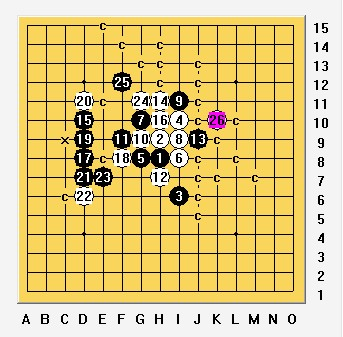

山月一打~~~
#1 山月一打~~~ 作者：自来水 发表时间：2009-5-27 18:06:26
过去刚接触这个局面时候觉得黑形状很好，于是便无视之
=======上图对应的爱五子棋谱代码如下，以便你拆解：========
h8h9i6i10g8
======================================================
前段时间和朋友下棋的时候他们提到这个局面并不是那么好下，在iwzq上的搜索也没有找到地毯谱
于是我拿着过去不知道从哪里来的各种毛巾毯拆一下，觉得某些定式确实需要明确，特此分享！
欢迎朋友们提出宝贵意见，也希望迷惑者能有所得。
 山月一打强四的必胜.rar
山月一打强四的必胜.rar［ 茗弈小刀 于 2009-5-27 18:22:32 时奖励此帖[金币加 20 威望加1］
#2 Re:山月一打~~~ 作者：茗弈小刀 发表时间：2009-5-27 18:22:52
谢谢楼主分享！#3 Re:山月一打~~~ 作者：自来水 发表时间：2009-5-27 18:25:11
……LS难道没有么
#4 Re:山月一打~~~ 作者：茗弈小刀 发表时间：2009-5-27 18:30:04
我当然有，但相信很多初学的朋友没有，总之自己劳动肯与大家分享我就是佩服的。说声谢谢也是应该的。#5 Re:山月一打~~~ 作者：自来水 发表时间：2009-5-27 18:32:32
有一点还是要说明一下:
整理过程中忽略了某个局面中白方的冲四,不影响黑的取胜.(可以按照冲四前的走法取胜)
某些局面取胜手段不唯一,由于文件大小的限制没有完全列举.
［ 茗弈小刀 于 2009-5-27 18:37:49 时花20金币送鲜花一朵］
#6 Re:山月一打~~~ 作者：自来水 发表时间：2009-5-27 18:42:24
……早知道我就不拆了。。
#7 Re:山月一打~~~ 作者：自来水 发表时间：2009-5-27 18:46:41
我错了，少了一路
=======上图对应的爱五子棋谱代码如下，以便你拆解：========
h8h9i6i10g8i8g10h7g9g7i7f10g6h6h5i4f8e8e7h10g5
======================================================
欢迎大家指正~~~
#8 Re:Re:山月一打~~~ 作者：黄药师 发表时间：2009-5-27 19:02:14
引用：
原文由 茗弈小刀 发表于 2009-5-27 18:30:04 :
我当然有，但相信很多初学的朋友没有，总之自己劳动肯与大家分享我就是佩服的。说声谢谢也是应该的。
说到我心里去了～
有没有疏星和瑞星的谱
#9 Re:山月一打~~~ 作者：自来水 发表时间：2009-5-27 19:11:52
LS的问题范围太大……#10 Re:Re:山月一打~~~ 作者：黄药师 发表时间：2009-5-27 19:16:25
引用：有没有疏星和瑞星的开局教学谱？教学生开局用的
原文由 自来水 发表于 2009-5-27 19:11:52 :
LS的问题范围太大……
（最好能标明哪些是必胜，哪些是强点，哪些是骗之类的）
#11 Re:山月一打~~~ 作者：自来水 发表时间：2009-5-27 19:21:19
我不是老师,拿不出可以用来教学生的谱#12 Re:Re:山月一打~~~ 作者：黄药师 发表时间：2009-5-27 19:34:17
引用：
原文由 自来水 发表于 2009-5-27 19:21:19 :
我不是老师,拿不出可以用来教学生的谱
 楼上谦虚了～
楼上谦虚了～
#13 Re:山月一打~~~ 作者：自来水 发表时间：2009-5-28 9:53:41
LS,谦虚的人是说实话的人...#14 Re:山月一打~~~ 作者：茗弈如梦 发表时间：2009-6-6 7:33:33
 佩服你的耐心打这个,以前感觉烦,换了另外两个胜点,送上花花(先欠着)
佩服你的耐心打这个,以前感觉烦,换了另外两个胜点,送上花花(先欠着)
#15 Re:山月一打~~~ 作者：高星 发表时间：2009-6-6 8:02:57
如梦MM
#16 Re:山月一打~~~ 作者：自来水 发表时间：2009-6-6 13:01:12
这个五知道时以为是一打,结果拆下来比两打还要繁琐...主要某些定式书比较害人#17 Re:山月一打~~~ 作者：苯酚 发表时间：2010-4-8 10:55:38
看过这个5很多版本的都说是自己的，但试问这个26大家都一样出bug？
#18 Re:山月一打~~~ 作者：淡红的秋樱 发表时间：2010-4-8 11:40:16
=======上图对应的爱五子棋谱代码如下，以便你拆解：========
h8h9i6i10g8i8g10i9i11g9f9h7j9h11e8
======================================================
这个15没什么问题。
#19 Re:山月一打~~~ 作者：苯酚 发表时间：2010-4-8 11:53:51
楼上的15诚然可以，原来的15也行；只是对楼主寒一个
#20 Re:山月一打~~~ 作者：岑小鱼 发表时间：2010-4-8 17:59:30
一打基本看论坛的版本
二打是自己拆的 不到一个小时全部清了 都不知道到底哪个是一打....
#21 Re:Re:山月一打~~~ 作者：岑小鱼 发表时间：2010-4-8 18:18:46
引用：
原文由 苯酚 发表于 2010-4-8 10:55:38 :看过这个5很多版本的都说是自己的，但试问这个26大家都一样出bug？
这个变化黑17直接占18的位置 苯酚mm的方式是怎么样子的?
［ 茗弈宽容 于 2010-4-8 22:24:09 时花20金币送鲜花一朵］
#22 Re:山月一打~~~ 作者：四川连珠魂 发表时间：2010-4-8 18:33:37
楼上17占18位，就已经必胜了。
=======上图对应的爱五子棋谱代码如下，以便你拆解：========
h8h9i6i10g8i8g10i9i11g9f9h7j9h11e8
======================================================
这个15也是必胜。
［ 茗弈宽容 于 2010-4-8 22:24:24 时花20金币送鲜花一朵］
#23 Re:山月一打~~~ 作者：yoda 发表时间：2010-4-8 18:37:26
=======上图对应的爱五子棋谱代码如下，以便你拆解：========
h8h9i6i10g8i8g10i9i11g9f9h7j9h11j7
======================================================
这个15也必胜。
［ 茗弈宽容 于 2010-4-8 22:24:41 时花20金币送鲜花一朵］
#24 Re:山月一打~~~ 作者：岑小鱼 发表时间：2010-4-8 18:54:46
yoda老师这个点 我第一眼就看中了 不过可能受到原谱的影响吧 最后还是按照谱上的去分析了
不过既然有了必胜的结论 就有信心分析下去 偶要把这个点也搞定
#25 Re:山月一打~~~ 作者：茗弈宽容 发表时间：2010-4-8 22:25:17
谢谢各位老师的补充修正。#26 Re:山月一打~~~ 作者：自来水 发表时间：2010-6-12 17:31:05
。。。N久以前的谱了，当时做的时候确实比较粗糙，这个点是终结者的Bug...感谢各位指正！
#27 Re:山月一打~~~ 作者：茗弈小刀 发表时间：2010-6-13 10:15:47
自来水弟弟这个头像酷毙了！
#28 Re:山月一打~~~ 作者：潜龙勿用吉 发表时间：2010-6-13 15:21:57
=======上图对应的爱五子棋谱代码如下，以便你拆解：========
h8h9i6i10g8i8g10i9i11g9f9h7j9h11e8e7
======================================================
这个16呐。。。不会
#29 Re:山月一打~~~ 作者：淡红的秋樱 发表时间：2010-6-13 15:31:11
=======上图对应的爱五子棋谱代码如下，以便你拆解：========
h8h9i6i10g8i8g10i9i11g9f9h7j9h11e8e7f7f8d6d7j7h5l8
======================================================
［ 潜龙勿用吉 于 2010-6-13 17:03:42 时花20金币送鲜花一朵］
#30 Re:山月一打~~~ 作者：自来水 发表时间：2011-2-16 10:20:43
=======上图对应的爱五子棋谱代码如下，以便你拆解：========
h8h9i6i10g8i8g10i9i11g9f9h7j9h11d10
======================================================
没有记错的话当时用的这是黑石选点...
#31 Re:山月一打~~~ 作者：屏蔽 发表时间：2011-2-16 11:26:48
平静的局面，人脑选攻，终结者扫防，靠软件的话，感觉黑石除了扫扫Bug也用处不大了。